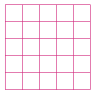
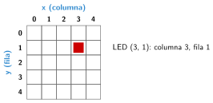

Salidas: matriz de LED y sonido
🤔 Pienso5 min
Qué hago aquí: Piensa un momento y contesta con lo que ya sabes. No pasa nada si no lo sabes: es para empezar.
Colorea los cuadros para dibujar la inicial de tu nombre.

📖 Leo y aprendo15 min
Qué hago aquí: Lee despacio, mira los dibujos y los ejemplos, y quédate con la idea clave del final.
La Micro:Bit tiene 25 LED en 5 filas y 5 columnas. Con ellos muestra dibujos, números y letras.
Cada LED tiene una dirección, sus coordenadas: columna (x) y fila (y). Las dos van de 0 a 4.

Para el sonido: reproducir tono toca una nota y reproducir melodía, una canción corta. La Micro:Bit V2 tiene altavoz.
✏️ Hago25 min
Qué hago aquí: Haz las actividades en orden. Empieza siempre por las básicas.
Une cada bloque con lo que hace.
| mostrar leds • | • Apaga los LED |
| mostrar número • | • Dibujas tú |
| borrar la pantalla • | • Muestra un número |
Mira el dibujo de las coordenadas. ¿Qué coordenadas tiene el LED de arriba a la izquierda?
Programa la placa para que, al iniciar, muestre tu inicial con mostrar leds.
Programa el timbre con luz. Cambia la nota hasta que te guste.
Haz una animación: al agitar, tres dibujos seguidos con una pausa de 200 ms. Dibuja aquí los tres dibujos.
✏️ Puedes responder escribiendo, con un dibujo o un esquema, o contándolo en voz alta.
🚀 Amplío (si quieres saber más)
Qué hago aquí: ¿Has terminado? Lee la curiosidad o elige el reto. Es voluntario.
Con graficar x y y un bucle, haz que un punto recorra la fila de arriba de izquierda a derecha.
✅ Compruebo5 min
Qué hago aquí: Contesta sin mirar la ficha y marca cómo lo llevas.